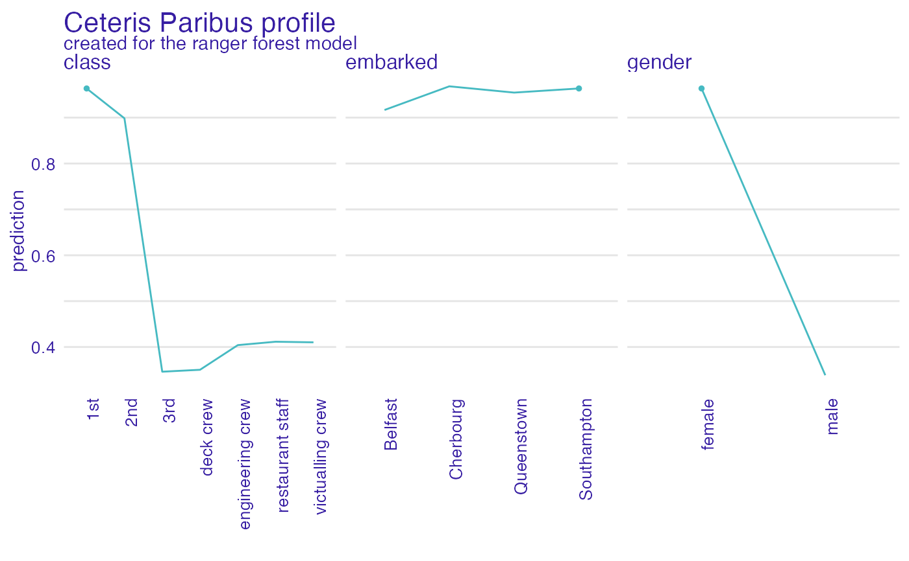
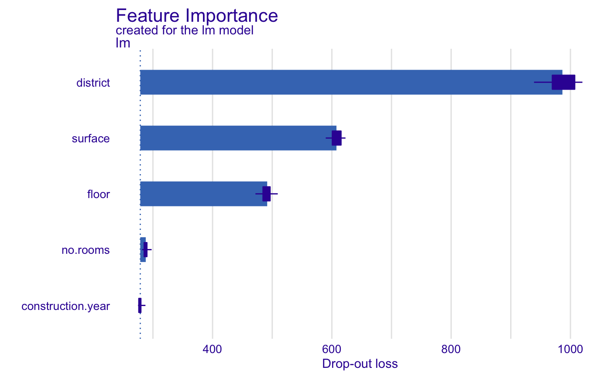

R/describe_aggregated_profiles.R, R/describe_ceteris_paribus.R, R/describe_feature_importance.R
describe.RdGeneric function describe generates a natural language
description of ceteris_paribus(), aggregated_profiles() and
feature_importance() explanations what enchaces their interpretability.
# S3 method for partial_dependence_explainer describe( x, nonsignificance_treshold = 0.15, ..., display_values = FALSE, display_numbers = FALSE, variables = NULL, label = "prediction" ) describe(x, ...) # S3 method for ceteris_paribus_explainer describe( x, nonsignificance_treshold = 0.15, ..., display_values = FALSE, display_numbers = FALSE, variables = NULL, label = "prediction" ) # S3 method for feature_importance_explainer describe(x, nonsignificance_treshold = 0.15, ...)
| x | a ceteris paribus explanation produced with function |
|---|---|
| nonsignificance_treshold | a parameter specifying a treshold for variable importance |
| ... | other arguments |
| display_values | allows for displaying variable values |
| display_numbers | allows for displaying numerical values |
| variables | a character of a single variable name to be described |
| label | label for model's prediction |
Function describe.ceteris_paribus() generates a natural language description of
ceteris paribus profile. The description summarizes variable values, that would change
model's prediction at most. If a ceteris paribus profile for multiple variables is passed,
variables must specify a single variable to be described. Works only for a ceteris paribus profile
for one observation. In current version only categorical values are discribed. For display_numbers = TRUE
three most important variable values are displayed, while display_numbers = FALSE displays
all the important variables, however without further details.
Function describe.ceteris_paribus() generates a natural language description of
ceteris paribus profile. The description summarizes variable values, that would change
model's prediction at most. If a ceteris paribus profile for multiple variables is passed,
variables must specify a single variable to be described. Works only for a ceteris paribus profile
for one observation. For display_numbers = TRUE
three most important variable values are displayed, while display_numbers = FALSE displays
all the important variables, however without further details.
Function describe.feature_importance_explainer() generates a natural language
description of feature importance explanation. It prints the number of important variables, that
have significant dropout difference from the full model, depending on nonsignificance_treshold.
The description prints the three most important variables for the model's prediction.
The current design of DALEX explainer does not allow for displaying variables values.
library("DALEX") library("randomForest") # \donttest{ model_titanic_rf <- randomForest(survived ~., data = titanic_imputed)#> Warning: The response has five or fewer unique values. Are you sure you want to do regression?explain_titanic_rf <- explain(model_titanic_rf, data = titanic_imputed[,-8], y = titanic_imputed[,8], label = "rf")#> Preparation of a new explainer is initiated #> -> model label : rf #> -> data : 2207 rows 7 cols #> -> target variable : 2207 values #> -> predict function : yhat.randomForest will be used ( default ) #> -> predicted values : numerical, min = 0.01386857 , mean = 0.322047 , max = 0.9891065 #> -> model_info : package randomForest , ver. 4.6.14 , task regression ( default ) #> -> residual function : difference between y and yhat ( default ) #> -> residuals : numerical, min = -0.7875532 , mean = 0.000109756 , max = 0.9019856 #> A new explainer has been created!selected_passangers <- select_sample(titanic_imputed, n = 10) cp_rf <- ceteris_paribus(explain_titanic_rf, selected_passangers) pdp <- aggregate_profiles(cp_rf, type = "partial", variable_type = "categorical") describe(pdp, variables = "gender")#> Rf's mean prediction is equal to 0.306. #> #> Model's prediction would decrease substantially if the value of gender variable would change to "female". #> The largest change would be marked if gender variable would change to "male". #> #> Other variables are with less importance and they do not change prediction by more than 0.06%.# } library("DALEX") library("randomForest") # \donttest{ model_titanic_rf <- randomForest(survived ~., data = titanic_imputed)#> Warning: The response has five or fewer unique values. Are you sure you want to do regression?explain_titanic_rf <- explain(model_titanic_rf, data = titanic_imputed[,-8], y = titanic_imputed[,8], label = "rf")#> Preparation of a new explainer is initiated #> -> model label : rf #> -> data : 2207 rows 7 cols #> -> target variable : 2207 values #> -> predict function : yhat.randomForest will be used ( default ) #> -> predicted values : numerical, min = 0.01192339 , mean = 0.322506 , max = 0.9905575 #> -> model_info : package randomForest , ver. 4.6.14 , task regression ( default ) #> -> residual function : difference between y and yhat ( default ) #> -> residuals : numerical, min = -0.7958346 , mean = -0.0003492121 , max = 0.9045203 #> A new explainer has been created!selected_passanger <- select_sample(titanic_imputed, n = 1, seed = 123) cp_rf <- ceteris_paribus(explain_titanic_rf, selected_passanger) plot(cp_rf, variable_type = "categorical")describe(cp_rf, variables = "class", label = "the predicted probability")#> For the selected instance, the predicted probability estimated by Rf is equal to 0.97. #> #> Model's prediction would decrease substantially if the value of class variable would change to "3rd", "engineering crew", "restaurant staff", "deck crew", "victualling crew". #> The largest change would be marked if class variable would change to "3rd". #> #> Other variables are with less importance and they do not change the predicted probability by more than 0.09%.# } library("DALEX") lm_model <- lm(m2.price~., data = apartments) explainer_lm <- explain(lm_model, data = apartments[,-1], y = apartments[,1])#> Preparation of a new explainer is initiated #> -> model label : lm ( default ) #> -> data : 1000 rows 5 cols #> -> target variable : 1000 values #> -> predict function : yhat.lm will be used ( default ) #> -> predicted values : numerical, min = 1781.848 , mean = 3487.019 , max = 6176.032 #> -> model_info : package stats , ver. 4.0.2 , task regression ( default ) #> -> residual function : difference between y and yhat ( default ) #> -> residuals : numerical, min = -247.4728 , mean = 2.093656e-14 , max = 469.0023 #> A new explainer has been created!describe(fi_lm)#> The number of important variables for lm's prediction is 3 out of 5. #> Variables district, surface, floor have the highest importantance.